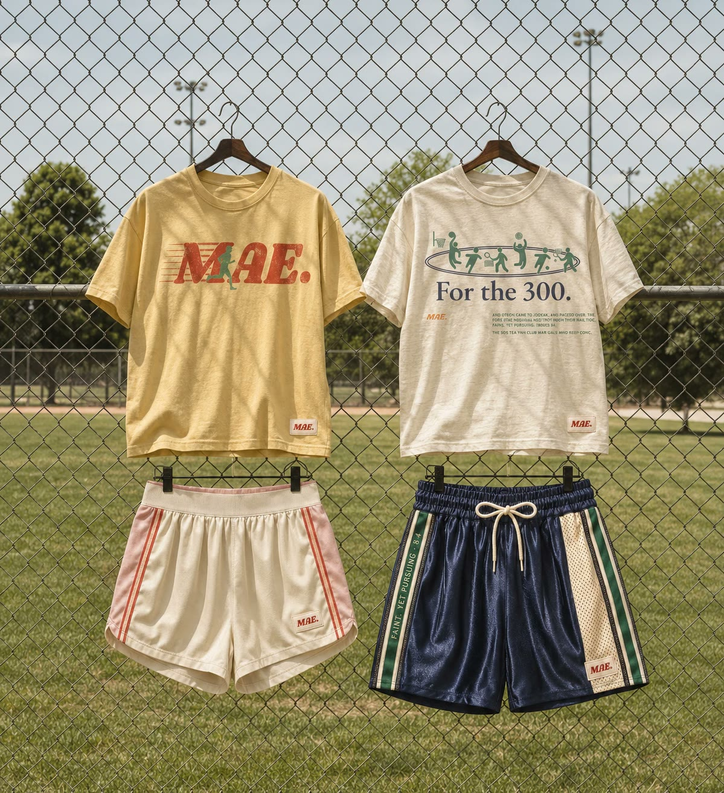

Pickup nights
Pickup at the park, open to everyone. Built around Christ-like community, where every run is an invite into MAE. and into the church.

Named for Gideon's 300 in Judges. Outnumbered and exhausted, they stayed in the fight. The girls who wear MAE. stay in it too, even when it's hard.
Pickup at the park, open to everyone. Built around Christ-like community, where every run is an invite into MAE. and into the church.

Easy miles and hard ones. Show up at your pace, finish with the group, and pray before you split.

Every MAE. piece carries a verse. Drop 01 starts with Judges 8:4: faint, yet pursuing.